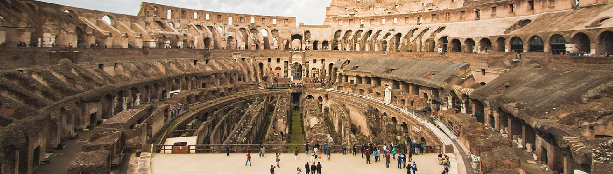

Rome notes
Home
The reason why Roman and Greek art looks so similar is because of how obsessed the Romans were with Greek art. Often they made copies of Greek sculpture and architecture, which usually are the only surviving copies we have of that work today. These notes span from the beginning to end of the Roman empire; including the Monarchy, Republic, and the Early, High, and Late Empires.
My first set of notes is from Ancient Art.
notes
My second set of notes is from Introduction to Mediterranean Archaeology.
notes
There are some other classes I've taken that have had short sections on various regions of the Mediterranean, like Greece or Rome. One class, called Art and Empire, explored different empires up to modern times but did have some modules on ancient stuff. Anyway, that class required a formal analysis and comparison paper, the latter which I have attached. The paper compares the Arch of Constantine to the Arc de Triomphe.
Napoleon vs Constantine: A Comparison of Triumphal Arches